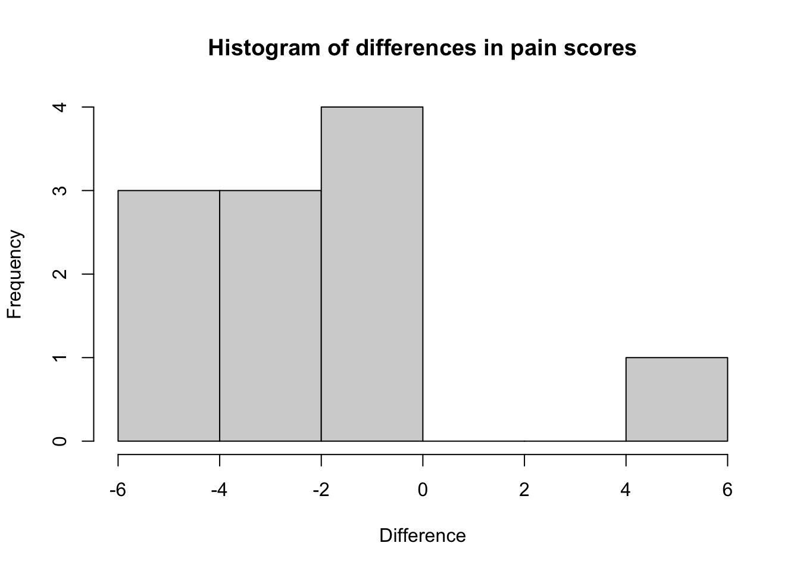

Module 10 Analysing non-normal data
10.0.1 Transforming non-normally distributed variables
One option for dealing with a non-normally distributed varaible is to transform it into its square, square root or logarithmic value. The new transformed variable may be normally distributed and therefore a parametric test can be used. First we check the distribution of the variable for normality, e.g. by plotting a histogram.
You can calculate a new, transformed, variable using standard commands. For example, to create a new column of data based on the log of length of stay:
library(jmv)
hospital <- readRDS("data/examples/Example_9.1.rds")
hospital$ln_los <- log(hospital$los+1)
descriptives(data=hospital, vars=c(los, ln_los))##
## DESCRIPTIVES
##
## Descriptives
## ───────────────────────────────────────────────
## los ln_los
## ───────────────────────────────────────────────
## N 132 132
## Missing 0 0
## Mean 38.05303 3.407232
## Median 27.00000 3.332205
## Standard deviation 35.78057 0.7149892
## Minimum 0.000000 0.000000
## Maximum 244.0000 5.501258
## ───────────────────────────────────────────────You can now check whether this logged variable is normally distributed as described in Module 2, for example by plotting a histogram as shown in Figure 9.2.
To obtain the back-transformed mean, we can use the exp command to anti-log the mean:
exp(3.407232)## [1] 30.18159If your transformed variable is approximately normally distributed, you can apply parametric tests such as the t-test. In the Worked Example 9.1 dataset, the variable infect (presence of nosocomial infection) is a binary categorical variable. To test the hypothesis that patients with nosocomial infection have a different length of stay to patients without infection, you can conduct a t-test on the ln_los variable. You will need to back transform your mean values, as shown in Worked Example 9.1 in the course notes when reporting your results.
10.0.2 Wilcoxon ranked-sum test
We use the wilcox.test function to perform the Wilcoxon ranked-sum test:
wilcox.test(continuous_variable ~ group_variable, data=df, correct=FALSE)The Wilcoxon ranked-sum test will be demonstrated using the length of stay data in Example_9.1.rds. Here, out continuous variable is los and the grouping variable is infect.
wilcox.test(los ~ infect, data=hospital, correct=FALSE)##
## Wilcoxon rank sum test
##
## data: los by infect
## W = 949, p-value = 0.01402
## alternative hypothesis: true location shift is not equal to 010.0.3 Wilcoxon matched-pairs signed-rank test
The wilcox.test function can also be used to conduct the Wilcoxon matched-pairs signed-rank test. The specification of the variables is a little different, in that each variable is specified as dataframe$variable:
wilcox.test(df$continuous_variable_1, df$continuous_variable_1, paired=TRUE)We will demonstrate using the dataset on the arthritis drug cross-over trial (Example_9.2.rds). Like the paired t-test the paired data need to be in separate columns.
arthritis <- readRDS("data/examples/Example_9.2.rds") %>%
unlabelled()
arthritis$difference = arthritis$drug_1 - arthritis$drug_2
hist(arthritis$difference, xlab="Difference", main="Histogram of differences in pain scores")
wilcox.test(arthritis$drug_1, arthritis$drug_2, paired=TRUE)## Warning in wilcox.test.default(arthritis$drug_1, arthritis$drug_2, paired =
## TRUE): cannot compute exact p-value with ties##
## Wilcoxon signed rank test with continuity correction
##
## data: arthritis$drug_1 and arthritis$drug_2
## V = 10.5, p-value = 0.04898
## alternative hypothesis: true location shift is not equal to 010.0.4 Estimating rank correlation coefficients
The analyses for Spearman’s and Kendall’s rank correlation are conducted in similar ways:
lung <- readRDS("data/examples/Example_8.1.rds")
cor.test(lung$Height, lung$FVC, method="spearman")## Warning in cor.test.default(lung$Height, lung$FVC, method = "spearman"): Cannot
## compute exact p-value with ties##
## Spearman's rank correlation rho
##
## data: lung$Height and lung$FVC
## S = 72699, p-value < 2.2e-16
## alternative hypothesis: true rho is not equal to 0
## sample estimates:
## rho
## 0.7475566cor.test(lung$Height, lung$FVC, method="kendall")##
## Kendall's rank correlation tau
##
## data: lung$Height and lung$FVC
## z = 8.8244, p-value < 2.2e-16
## alternative hypothesis: true tau is not equal to 0
## sample estimates:
## tau
## 0.5609431